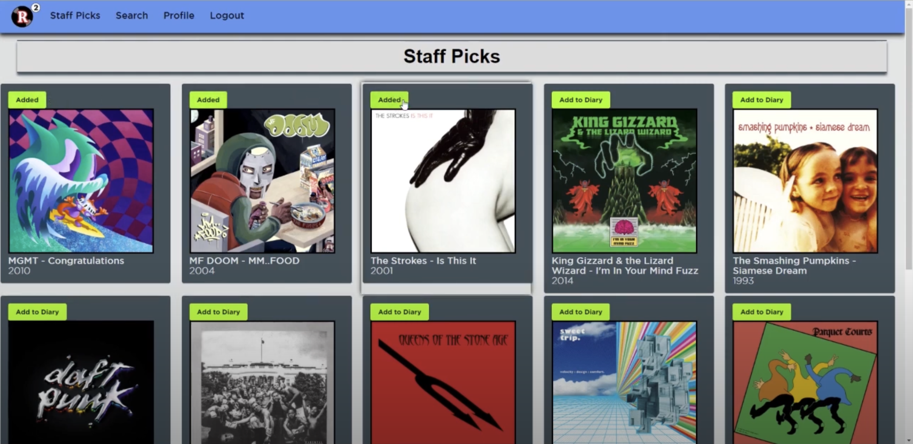
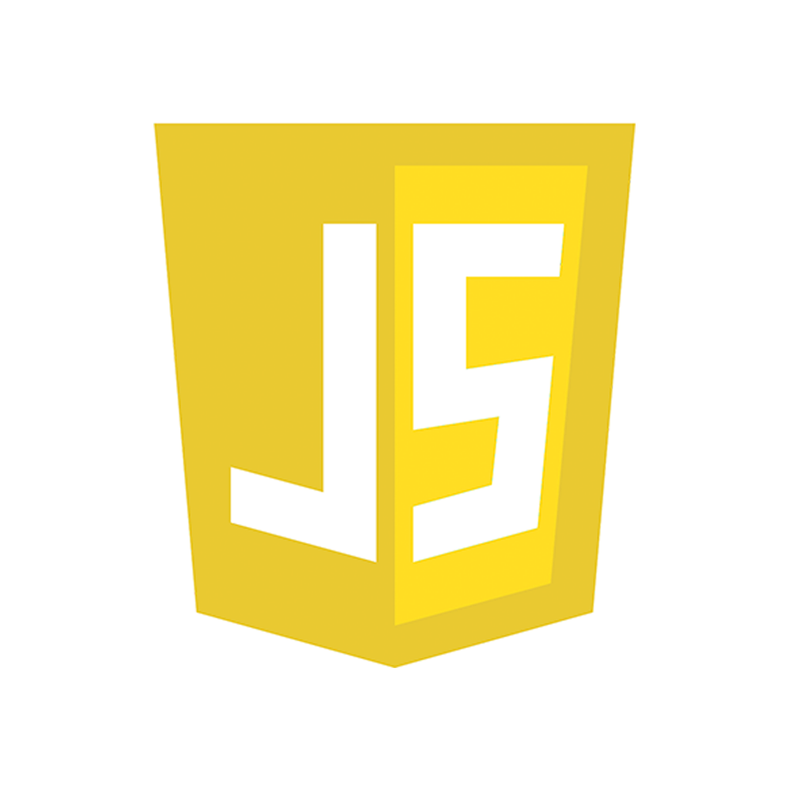

Projects
Record Squared
Music diary website that allow users to keep track of their music listening habits. It functions like a diary, where users can update albums they have listend to, rate them, and add comments.
Technologies:



Cush (Customized Shell Prompt)

Customizable shell is a command-line interface created based upon Unix OS. It allows users to perform basic shell commands as well as customized commands. Addtionally, the shell allow users to tailor the enviroment to their specific needs provdiding users with a highly flexible and adaptable command line interface.
Technologies: